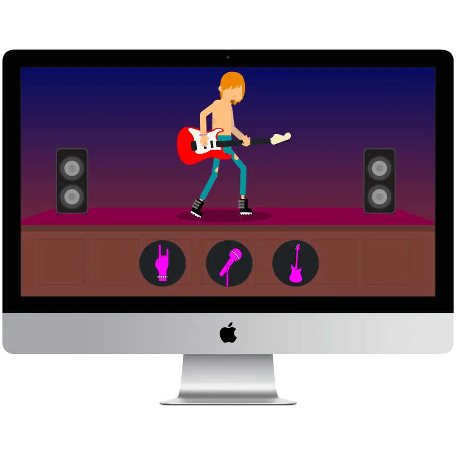
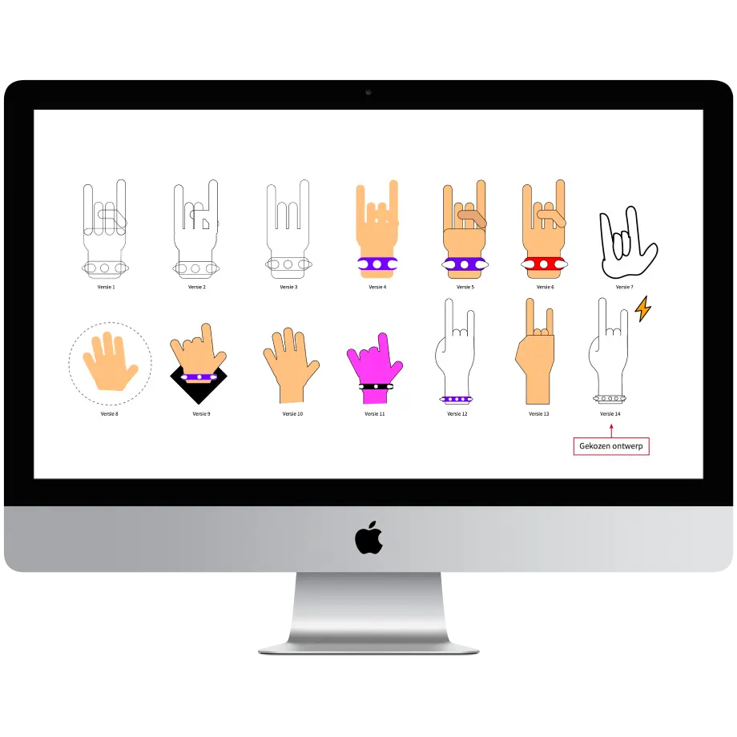
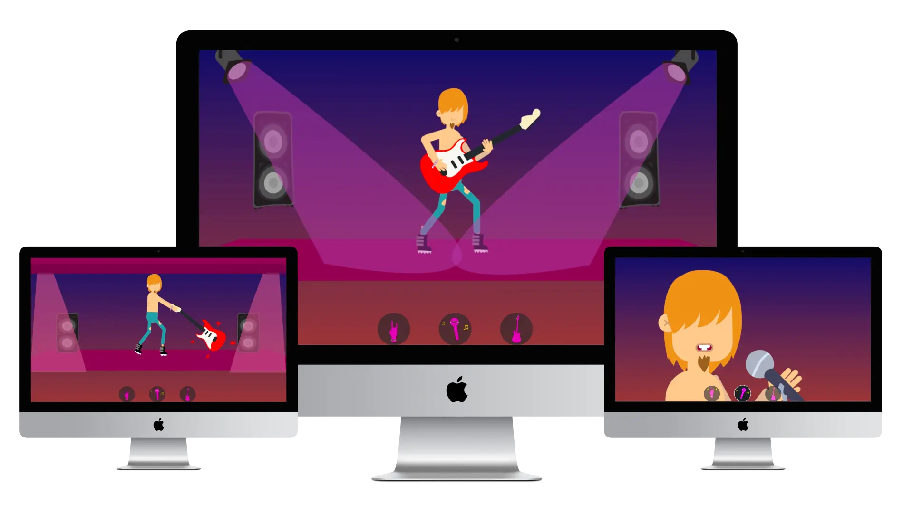
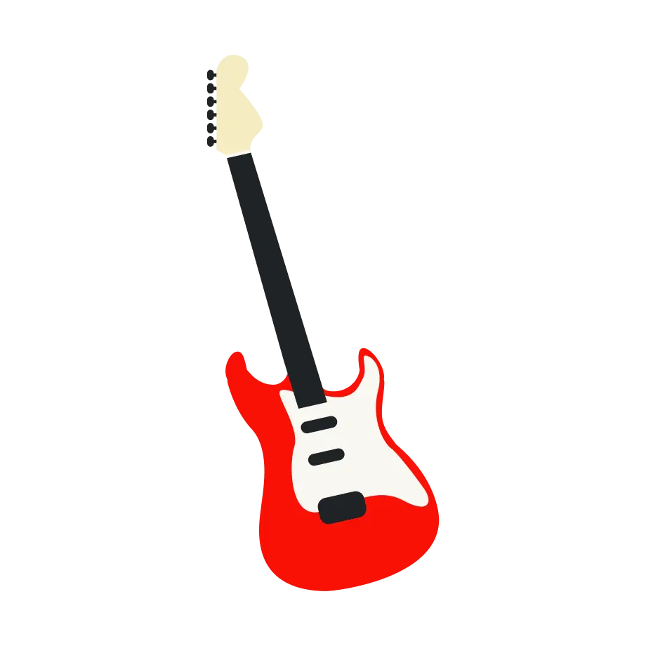

Concept
Het ontwikkelen van het eerste characterconcept, van ruwe schetsen en line art tot de digitale uitwerking en omgeving.
Interface & Beweging is een interactief interface concept waarin beweging en visuele interactie centraal staan.
Binnen dit project heb ik een eigen character en verschillende interactieve iconen ontwikkeld en onderzocht hoe deze door middel van beweging tot leven kunnen komen binnen een interface.

De uitdaging was om een visueel karakter en verschillende iconen te ontwerpen die niet alleen herkenbaar zijn, maar ook goed werken in beweging. Hierbij moest ik zoeken naar een balans tussen illustratie, animatie en interactie, zodat de beweging de interface versterkt zonder af te leiden van de gebruiker.
Het ontwikkelen van het eerste characterconcept, van ruwe schetsen en line art tot de digitale uitwerking en omgeving.
Het bedenken en uitwerken van de verschillende functies en bijbehorende iconen. Hierbij heb je zowel analoog als digitaal verschillende richtingen onderzocht.
Het onderzoeken van visuele stijlen, het ontwerpen van bewegende iconen en het uitwerken van de interface. Hierbij kwamen ook het storyboard en de muziek samen.
Het samenbrengen van interface, beweging en interactie in het uiteindelijke concept en het verwerken van feedback om het ontwerp verder te verbeteren.
Het onderzoeken van verschillende visuele stijlen, iconen en bewegingsrichtingen om de juiste uitstraling voor de interface te bepalen. Met behulp van schetsen en een storyboard heb ik verschillende ideeën uitgewerkt en onderzocht hoe beweging de interactie binnen de interface kan versterken.

Het uitwerken van de gekozen richting tot de definitieve interface, waarbij de gridstructuur, kleur en visuele hiërarchie samenkomen in het uiteindelijke scherm.

Dit project heeft mij laten zien hoe beweging en interactie een interface meer karakter en dynamiek kunnen geven. Door illustratie, motion en interface design te combineren, heb ik geleerd om niet alleen naar het visuele ontwerp te kijken, maar ook naar hoe een gebruiker een interface ervaart en ermee interacteert.
Motion is the language of the interface.

Bekijk het uiteindelijke interactieve concept en ontdek hoe interface, beweging en illustratie samenkomen.
Ervaar zelf hoe de bewegende elementen reageren binnen de interface en hoe motion kan bijdragen aan een meer dynamische en interactieve gebruikerservaring.